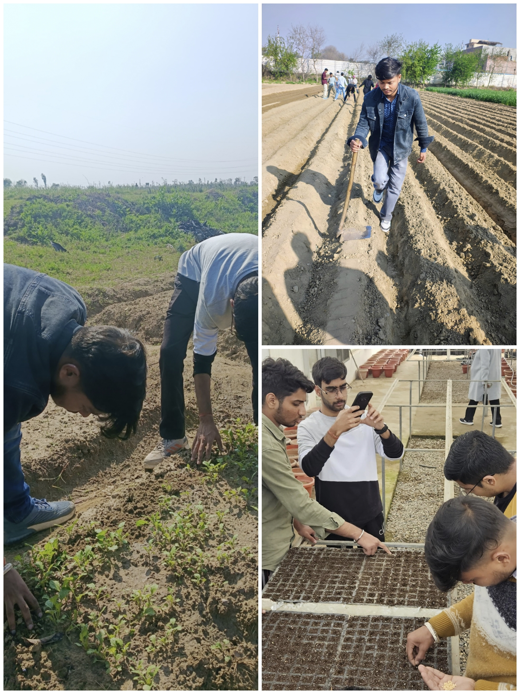

Welcome to My Portfolio
A showcase of my journey, projects, and achievements
About Me
I am Nikhil Kumar, a dedicated agriculture student at Lovely Professional University, passionate about sustainable farming, modern agricultural technologies, and eco-friendly practices to enhance food security and revolutionize the farming sector.
Why Agriculture?
Agriculture is more than just farming; it’s about nurturing life. I chose this path because I love the connection between people, food, and nature. Growing something that feeds others is deeply fulfilling, and I want to contribute to a future where farming is more sustainable, efficient, and rewarding for everyone.

Education
B.Sc. (Hons.) Agriculture - Lovely Professional University
Intermediate - Modern Public School
Secondary School - Modern Public School

Projects & Achievements
Working on Vertical Farming & Multilayer farming Project
Mushroom Cultivation
Participated in SSAFNS Conducted by LPU.
